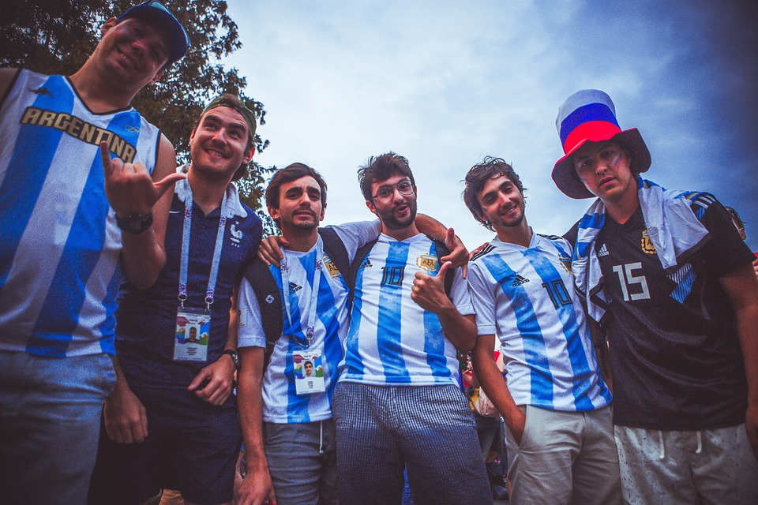
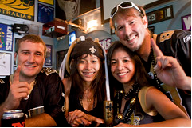
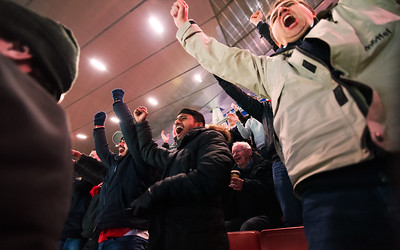
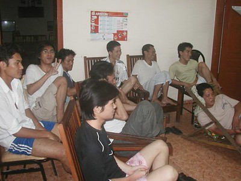
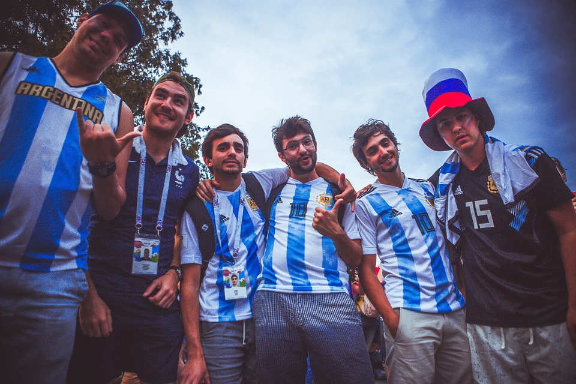
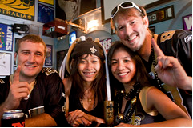
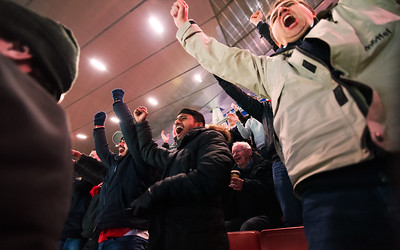
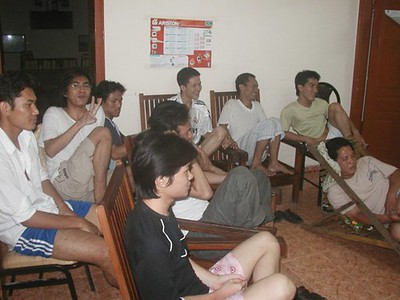

¿Quiénes somos?
La Asociación De Amigos del Fútbol (AAF), está al servicio del colectivo de futbolistas, hombres y mujeres, promoviendo su unión, para su desarrollo normal de su carrera deportiva y posterior promoción laboral, defendiendo y garantizando los derechos laborales, económicos, formativos, sociales, presentes y futuros, transmitiendo los valores deportivos a sus afiliados/as y a la sociedad.
Actividades
- Hablar de la Liga Española
- Hablar de algún equipo
- Hablar de la selección española
- Hacer quinielas
- Ver algún partido importante
- Normas de fútbol
- Hablar de algún futbolista
- Hablar del arbitraje
Galería

 






